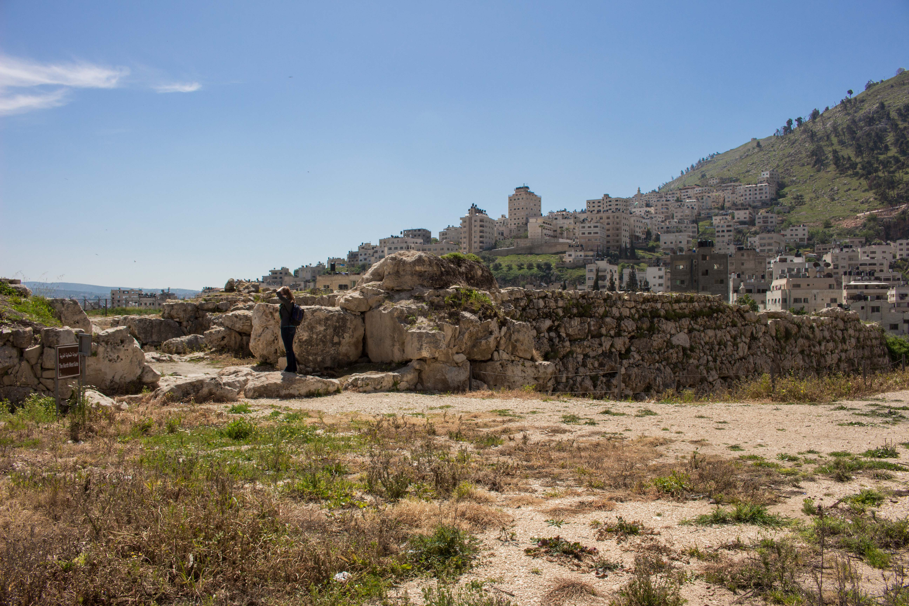

Shechem (Tell Balata)

The excavated covenant city between Mounts Gerizim and Ebal, where Abram first built an altar in the land and where Joshua gathered Israel to renew the covenant. Its massive fortifications, gate, and sacred precinct have been uncovered in successive excavations. Joshua records Joseph's bones buried at Shechem; the present-day tomb building is traditional, and the entry does not claim it as Joseph's original grave.
Biblical Significance
Shechem is where the story keeps returning: Abram's altar, Jacob's well nearby, Joshua's 'choose you this day.' It is a city of decisions, and its stones frame the choice Joshua set before Israel — and before every reader since.
Interpretations
Scholars broadly accept Tell Balata as biblical Shechem; the present Joseph's tomb structure is a traditional shrine, not an excavated patriarchal grave, and is presented as tradition only.